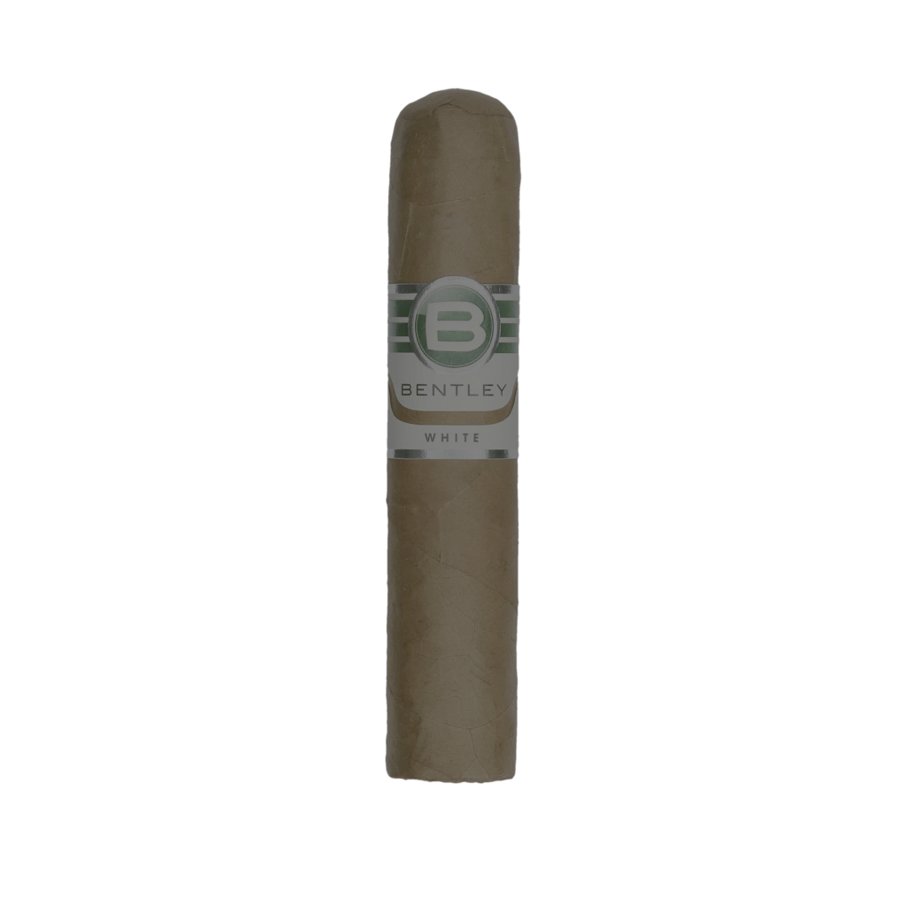
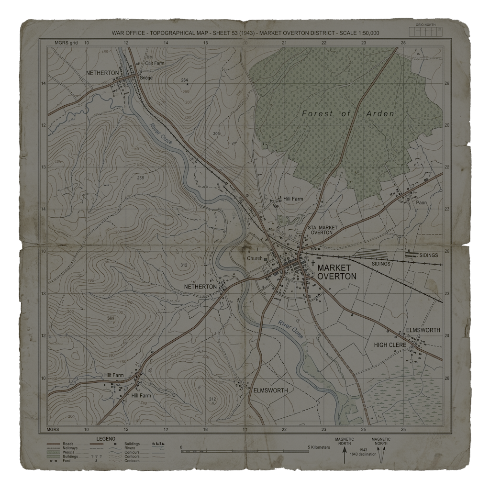
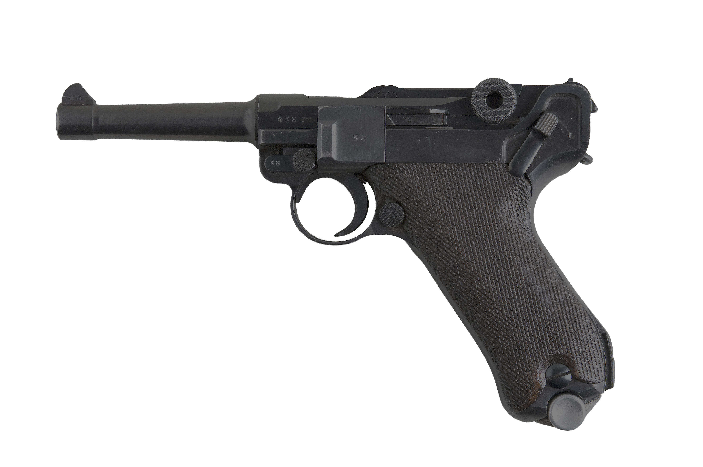
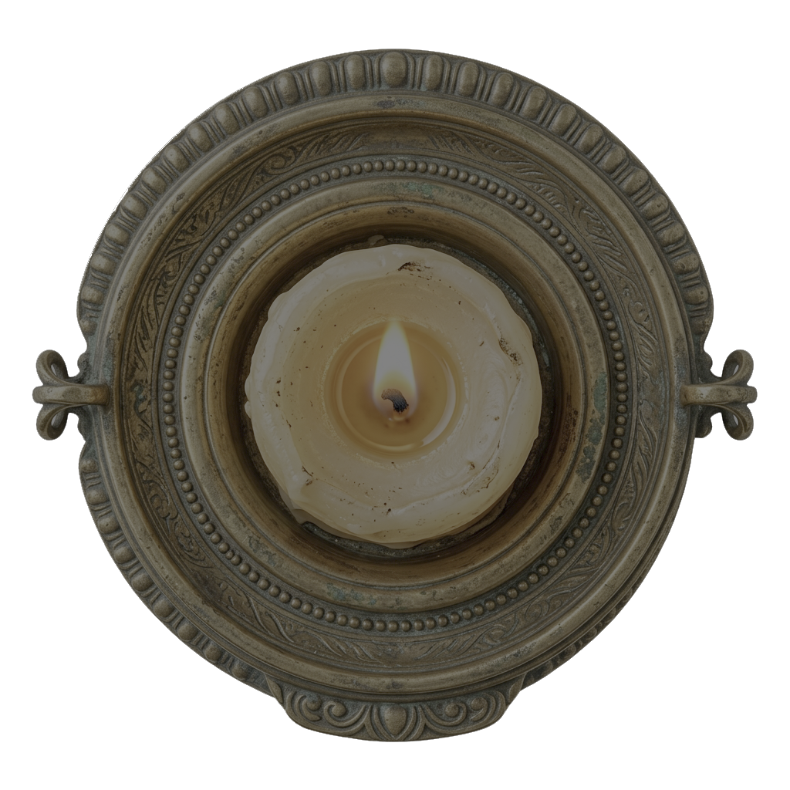
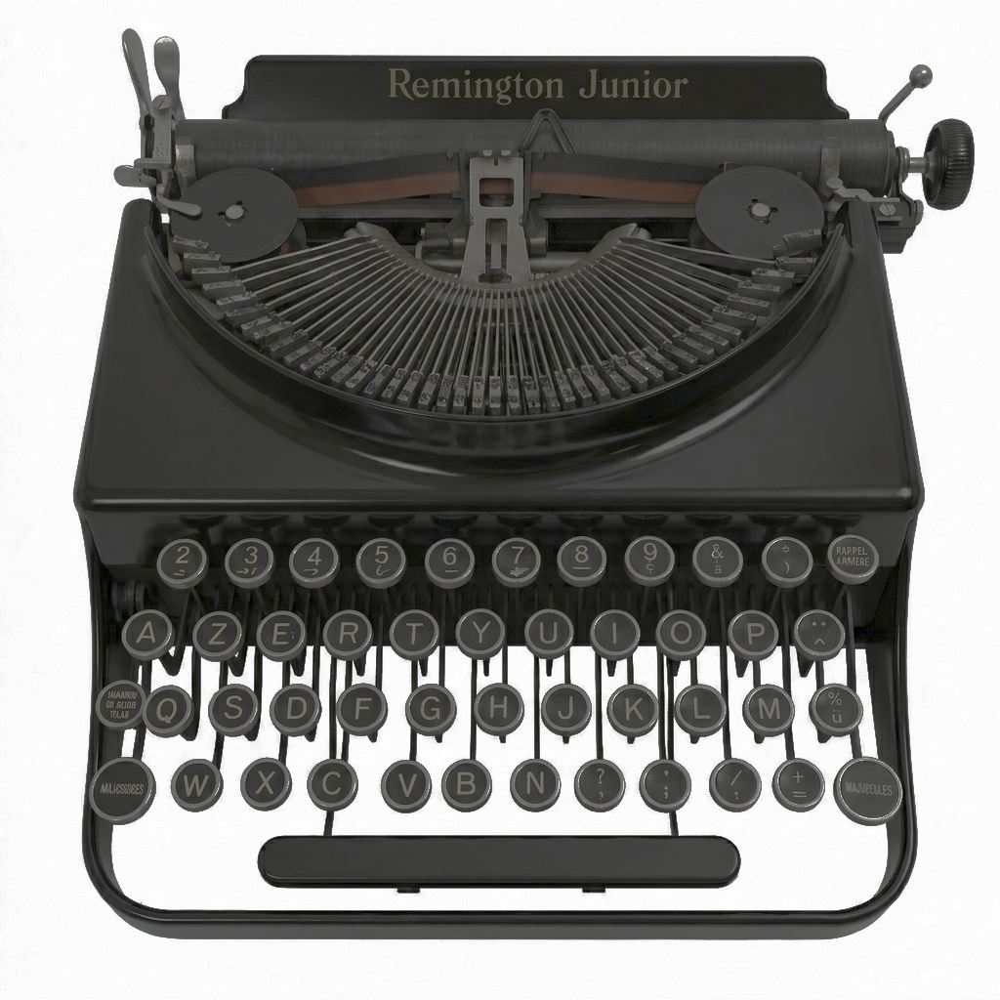

BBC · 49.8 MHz
↑ La Forge d'Ans
T.M. — Cubjac, 3 août ✦
↗ Azimut 245°










")







DANDY à FACTEUR — 4 août 44
Écoute ce soir 21h45 sur la BBC.
Fréquence habituelle.
Le message sera pour nous.
— V.
5 AOÛT 1944 — 00h17
Le parachutage allié aura lieu cette nuit.
Point de chute confirmé : CUBJAC, confluent de l'Auvézère.
Résistants mobilisés. La Libération approche.
« On ne meurt pas pour des idées, on meurt pour des hommes. »
— Le Facteur